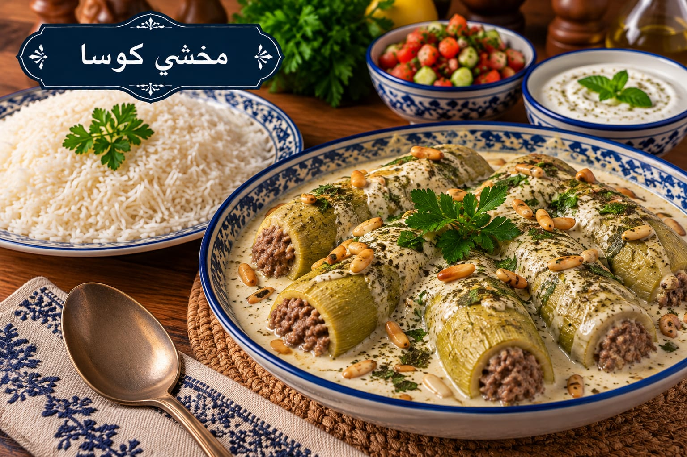

مخشي كوسا
كوسا محشية باللحم ومطبوخة باللبن

مقادير مخشي كوسا
- 1½ كغ كوسا صغيرة
- 400 غ لحم مفروم
- 1 بصلة صغيرة
- 2 ملعقة كبيرة صنوبر
- 1½ ملعقة صغيرة ملح موزعة
- 1 ملعقة صغيرة بهار مشكل
- ½ ملعقة صغيرة فلفل أسود
- 1½ كغ لبن
- 1 ملعقة كبيرة نشا
- 1 بيضة
- 3 فصوص ثوم
- 1 ملعقة صغيرة نعناع ناشف
طريقة عمل مخشي كوسا
- اغسلي الكوسا واقطعي الرأس ثم احفريها بحذر مع ترك جدار متماسك حتى لا تتمزق.
- حمري البصل واللحم والصنوبر وأضيفي نصف الملح والبهار والفلفل، ثم اتركي الحشوة تبرد قليلًا.
- احشي الكوسا حتى ثلاثة أرباعها واتركي فراغًا بسيطًا عند الفتحة. حمريها بخفة أو رتبيها مباشرة حسب الرغبة.
- اخفقي اللبن والنشا والبيضة وبقية الملح وهو بارد حتى يتجانس تمامًا. ارفعيه على نار متوسطة مع التحريك المستمر في اتجاه واحد حتى يبدأ بالغليان.
- أضيفي الكوسا بحذر وخففي النار واتركيها 25–35 دقيقة حتى تنضج من الداخل.
- حمري الثوم مع النعناع وأضيفيه إلى اللبن، ثم اتركي الطبق يرتاح 5–10 دقائق قبل التقديم.